DOCUMENT OBJECT MODEL¶
El Modelo de Objetos del Documento (DOM) especifica cómo los navegadores deben crear un modelo de una página HTML y cómo JavaScript puede acceder y actualizar el contenido de una página web mientras está en la ventana del navegador.
El DOM no es parte de HTML, ni parte de JavaScript; es un conjunto separado de reglas. Es implementado por todos los principales fabricantes de navegadores y cubre dos áreas principales:
CREANDO UN MODELO DE LA PÁGINA HTML
Cuando el navegador carga una página web, crea un modelo de la página en memoria. El DOM especifica la forma en que el navegador debe estructurar este modelo usando un árbol DOM.
El DOM se llama modelo de objetos porque el modelo (el árbol DOM) está hecho de objetos. Cada objeto representa una parte diferente de la página cargada en la ventana del navegador.
ACCEDIENDO Y CAMBIANDO LA PÁGINA HTML
El DOM también define métodos y propiedades para acceder y actualizar cada objeto en este modelo, lo que a su vez actualiza lo que el usuario ve en el navegador.
Escucharás a personas llamar al DOM una Interfaz de Programación de Aplicaciones (API). Las interfaces de usuario permiten que los humanos interactúen con programas; las APIs permiten que los programas (y scripts) se comuniquen entre sí. El DOM establece lo que tu script puede preguntarle al navegador sobre la página actual y cómo decirle al navegador que actualice lo que se muestra al usuario.
EL ÁRBOL DOM ES UN MODELO DE UNA PÁGINA WEB¶
A medida que un navegador carga una página web, crea un modelo de esa página. El modelo se llama árbol DOM y se almacena en la memoria del navegador. Consiste en cuatro tipos principales de nodos:
CUERPO DE LA PÁGINA HTML¶
EL NODO DOCUMENTO¶
Arriba puedes ver el código HTML de una lista de compras, y en la página derecha está su árbol DOM. Cada elemento, atributo y fragmento de texto en el HTML está representado por su propio nodo DOM.
En la parte superior del árbol se añade un nodo documento; representa la página completa (y también corresponde al objeto document, que conociste en la pág. 36).
Cuando accedes a cualquier elemento, atributo o nodo de texto, navegas hacia él a través del nodo documento. Es el punto de partida para todas las visitas al árbol DOM.
NODOS ELEMENTO¶
Los elementos HTML describen la estructura de una página HTML. (Los elementos <h1> – <h6> describen qué partes son encabezados; las etiquetas <p> indican dónde comienzan y terminan los párrafos de texto; y así sucesivamente).
Para acceder al árbol DOM, comienzas buscando elementos. Una vez que encuentras el elemento que deseas, entonces puedes acceder a sus nodos de texto y atributos si quieres. Por eso comienzas aprendiendo métodos que te permiten acceder a nodos elemento, antes de aprender a acceder y alterar texto o atributos.
Note
Continuaremos usando este ejemplo de lista a lo largo de este capítulo y los dos siguientes para que puedas ver cómo diferentes técnicas te permiten acceder y actualizar la página web (que está representada por este árbol DOM).
Las relaciones entre el documento y todos los nodos elemento se describen usando los mismos términos que un árbol genealógico: padres, hijos, hermanos, ancestros y descendientes. (Cada nodo es un descendiente del nodo documento).
Cada nodo es un objeto con métodos y propiedades. Los scripts acceden y actualizan este árbol DOM (no el archivo HTML fuente). Cualquier cambio realizado en el árbol DOM se refleja en el navegador.
ÁRBOL DOM¶
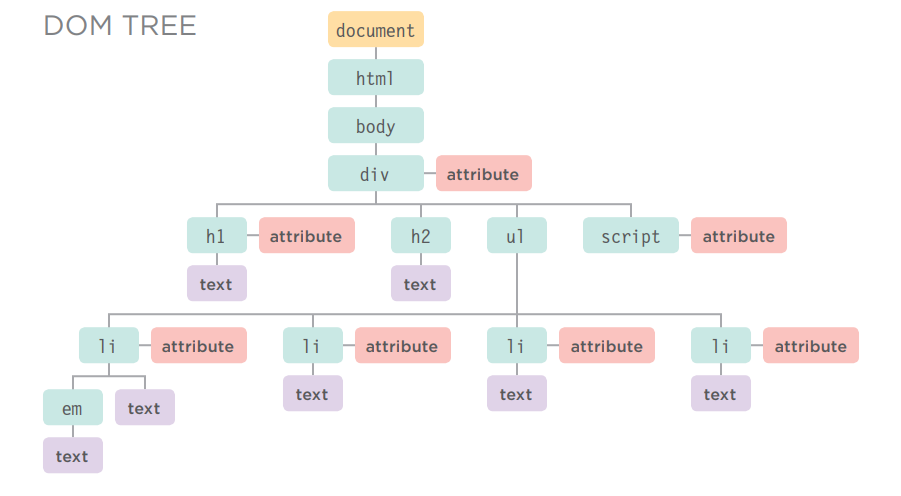
NODOS ATRIBUTO¶
Las etiquetas de apertura de los elementos HTML pueden llevar atributos y estos están representados por nodos atributo en el árbol DOM.
Los nodos atributo no son hijos del elemento que los contiene; son parte de ese elemento. Una vez que accedes a un elemento, existen métodos y propiedades específicos de JavaScript para leer o cambiar los atributos de ese elemento. Por ejemplo, es común cambiar los valores de los atributos class para activar nuevas reglas CSS que afecten su presentación.
NODOS TEXTO¶
Una vez que has accedido a un nodo elemento, puedes llegar al texto dentro de ese elemento. Este se almacena en su propio nodo texto.
Los nodos texto no pueden tener hijos. Si un elemento contiene texto y otro elemento hijo, el elemento hijo no es hijo del nodo texto sino más bien hijo del elemento contenedor. (Observa el elemento <em> en el primer elemento <li>). Esto ilustra cómo el nodo texto es siempre una nueva rama del árbol DOM, y no salen más ramas de él.
TRABAJANDO CON EL ÁRBOL DOM¶
Acceder y actualizar el árbol DOM implica dos pasos:
- Localiza el nodo que representa el elemento con el que deseas trabajar.
- Utiliza su contenido de texto, elementos hijos y atributos.
PASO 1: ACCEDER A LOS ELEMENTOS¶
Aquí tienes una visión general de los métodos y propiedades que acceden a los elementos cubiertos en las págs. 192 – 211. Las dos primeras filas se conocen como consultas DOM. La última columna se conoce como recorrer el DOM.
SELECCIONAR UN NODO ELEMENTO INDIVIDUAL¶
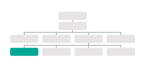
Aquí hay tres formas comunes de seleccionar un elemento individual:
getElementById()-
Utiliza el valor del atributo
idde un elemento (que debería ser único dentro de la página). Ver pág. 195 querySelector()-
Utiliza un selector CSS y devuelve el primer elemento que coincide. Ver pág. 202
SELECCIONAR MÚLTIPLES ELEMENTOS (NODELISTS)¶
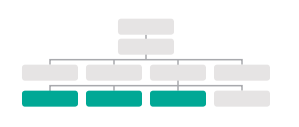
Hay tres formas comunes de seleccionar múltiples elementos.
-
getElementsByClassName(): Selecciona todos los elementos que tienen un valor específico en su atributoclass. Ver pág. 200 -
getElementsByTagName(): Selecciona todos los elementos que tienen el nombre de etiqueta especificado. Ver pág. 201 -
querySelectorAll(): Utiliza un selector CSS para seleccionar todos los elementos que coinciden. Ver pág. 202
RECORRER ENTRE NODOS ELEMENTO¶
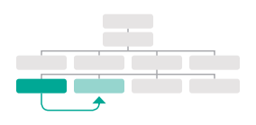
Puedes moverte de un nodo elemento a otro nodo elemento relacionado.
-
parentNode: Selecciona el padre del nodo elemento actual (devolverá solo un elemento). Ver pág. 208 -
previousSibling/nextSibling: Selecciona el hermano anterior o siguiente del árbol DOM. Ver pág. 210 -
firstChild/lastChild: Selecciona el primer o último hijo del elemento actual. Ver pág. 211
A lo largo del capítulo verás notas sobre métodos DOM que solo funcionan en ciertos navegadores o que tienen errores. El soporte inconsistente del DOM entre navegadores fue una razón clave por la que jQuery se volvió tan popular.
Los términos elementos y nodos elemento se usan indistintamente, pero cuando la gente dice que el DOM está trabajando con un elemento, en realidad está trabajando con un nodo que representa ese elemento.
PASO 2: TRABAJAR CON ESOS ELEMENTOS¶
Aquí tienes una visión general de los métodos y propiedades que trabajan con los elementos presentados en la pág. 186.
ACCEDER / ACTUALIZAR NODOS TEXTO¶
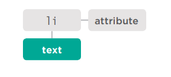
El texto dentro de cualquier elemento se almacena dentro de un nodo texto. Para acceder al nodo texto anterior:
- Selecciona el elemento
<li> - Usa la propiedad
firstChildpara obtener el nodo texto - Usa la única propiedad del nodo texto (
nodeValue) para obtener el texto del elemento
nodeValue : Esta propiedad te permite acceder o actualizar el contenido de un nodo texto.
Ver pág. 214
El nodo texto no incluye el texto dentro de ningún elemento hijo.
TRABAJAR CON CONTENIDO HTML¶
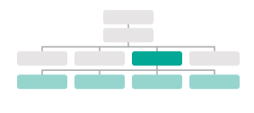
Una propiedad permite acceder a elementos hijos y contenido de texto:
-
innerHTMLVer pág. 220
Otra solo al contenido de texto:
-
textContentVer pág. 216
Varios métodos te permiten crear nuevos nodos, agregar nodos a un árbol y eliminar nodos de un árbol:
-
createElement() -
createTextNode() -
appendChild() -
removeChild()
Esto se llama manipulación del DOM. Ver pág. 222
ACCEDER O ACTUALIZAR VALORES DE ATRIBUTOS¶
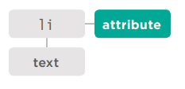
Aquí hay algunas de las propiedades y métodos que puedes usar para trabajar con atributos:
-
className/id
Te permite obtener o actualizar el valor de los atributos class e id.
Ver pág. 232
Si tu script necesita usar el o los mismos elementos más de una vez, puedes almacenar la ubicación del o los elementos en una variable.
-
hasAttribute() -
getAttribute() -
setAttribute() -
removeAttribute()
El primero verifica si un atributo existe. El segundo obtiene su valor. El tercero actualiza el valor. El cuarto elimina un atributo. Ver pág. 232
ALMACENAR EN CACHÉ CONSULTAS DOM¶
Los métodos que encuentran elementos en el árbol DOM se llaman consultas DOM.Cuando necesites trabajar con un elemento más de una vez, debes usar una variable para almacenar el resultado de esta consulta.
Cuando un script selecciona un elemento para accederlo o actualizarlo, el intérprete debe encontrar el o los elementos en el árbol DOM.
Abajo, se le indica al intérprete que busque en el árbol DOM un elemento cuyo atributo id tenga el valor one.
Una vez que ha encontrado el nodo que representa el o los elementos, puedes trabajar con ese nodo, su padre o cualquier hijo.
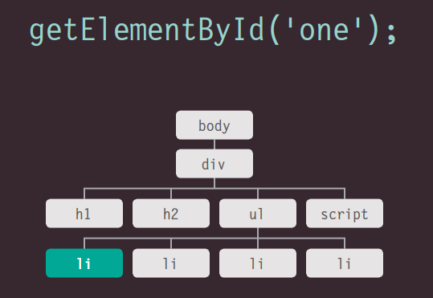
Cuando las personas hablan de almacenar elementos en variables, en realidad están almacenando la ubicación del o los elementos dentro del árbol DOM en una variable. Las propiedades y métodos de ese nodo elemento funcionan sobre la variable.
Si tu script necesita usar el o los mismos elementos más de una vez, puedes almacenar la ubicación del o los elementos en una variable.
Esto evita que el navegador tenga que buscar en el árbol DOM para encontrar el o los mismos elementos nuevamente. Se conoce como almacenar en caché la selección.
Los programadores dirían que la variable almacena una referencia al objeto en el árbol DOM. (Está almacenando la ubicación del nodo).
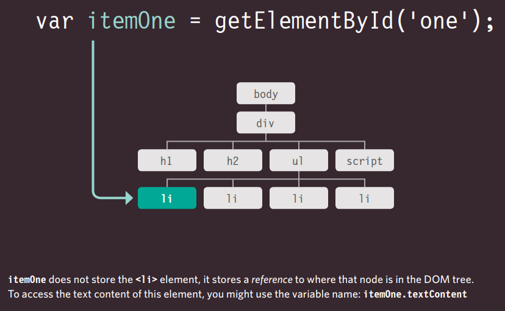
itemOne no almacena el elemento <li>, almacena una referencia a dónde está ese nodo en el árbol DOM. Para acceder al contenido de texto de este elemento, podrías usar el nombre de la variable: itemOne.textContent
ACCEDIENDO A ELEMENTOS¶
Las consultas DOM pueden devolver un elemento, o pueden devolver una NodeList, que es una colección de nodos.
A veces solo querrás acceder a un elemento individual (o un fragmento de la página que está almacenado dentro de ese elemento). Otras veces puedes querer seleccionar un grupo de elementos, por ejemplo, cada elemento <h1> en la página o cada elemento <li> dentro de una lista en particular.
Aquí, el árbol DOM muestra el cuerpo de la página del ejemplo de la lista. Nos enfocamos en acceder a los elementos primero, por lo que solo muestra nodos elemento. Los diagramas en las páginas siguientes resaltan qué elementos devolvería una consulta DOM. (Recuerda, los nodos elemento son la representación DOM de un elemento).
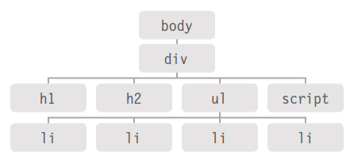
GRUPOS DE NODOS ELEMENTO¶
Si un método puede devolver más de un nodo, siempre devolverá una NodeList, que es una colección de nodos (incluso si solo encuentra un elemento coincidente). Luego debes seleccionar el elemento que deseas de esta lista usando un número de índice (lo que significa que la numeración comienza en 0 como los elementos de un arreglo).
Por ejemplo, varios elementos pueden tener el mismo nombre de etiqueta, por lo que getElementsByTagName() siempre devolverá una NodeList.
RUTA MÁS RÁPIDA¶
Encontrar la forma más rápida de acceder a un elemento dentro de tu página web hará que la página parezca más rápida y/o más receptiva. Esto generalmente significa evaluar el número mínimo de nodos en el camino hacia el elemento con el que deseas trabajar.
Por ejemplo, getElementById() devolverá rápidamente un elemento (porque no hay dos elementos en la misma página que deban tener el mismo valor para un atributo id), pero solo se puede usar cuando el elemento al que deseas acceder tiene un atributo id.
MÉTODOS QUE DEVUELVEN UN SOLO NODO ELEMENTO:¶
-
getElementById('id')Selecciona un elemento individual dado el valor de su atributoid. El HTML debe tener un atributoidpara que pueda ser seleccionable. -
querySelector('css selector')Utiliza la sintaxis de selectores CSS que seleccionaría uno o más elementos. Este método devuelve solo el primero de los elementos coincidentes.
MÉTODOS QUE DEVUELVEN UNO O MÁS ELEMENTOS (COMO UNA NODELIST):¶
-
getElementsByClassName('class')Selecciona uno o más elementos dado el valor de su atributoclass. El HTML debe tener un atributoclasspara que pueda ser seleccionable. Este método es más rápido quequerySelectorAll(). -
getElementsByTagName('tagName')Selecciona todos los elementos de la página con el nombre de etiqueta especificado. Este método es más rápido quequerySelectorAll(). -
querySelectorAll('css selector')Utiliza la sintaxis de selectores CSS para seleccionar uno o más elementos y devuelve todos los que coinciden.
MÉTODOS QUE SELECCIONAN ELEMENTOS INDIVIDUALES¶
getElementById() y querySelector() pueden buscar en un documento completo y devolver elementos individuales. Ambos usan una sintaxis similar.
-
getElementById()es la forma más rápida y eficiente de acceder a un elemento porque no hay dos elementos que puedan compartir el mismo valor para su atributoid. La sintaxis de este método se muestra a continuación, y un ejemplo de su uso está en la página de la derecha. -
querySelector()es una adición más reciente al DOM, por lo que no es compatible con navegadores antiguos. Pero es muy flexible porque su parámetro es un selector CSS, lo que significa que se puede usar para apuntar con precisión a muchos más elementos.
documentse refiere al objeto documento. Siempre debes acceder a los elementos individuales a través del objeto documento.El método
getElementById()indica que deseas encontrar un elemento basado en el valor de su atributoid.MEMBER OPERATOR La notación de punto indica que el método (a la derecha) se está aplicando al nodo a la izquierda del punto.
PARAMETER El método necesita saber el valor del atributo
iddel elemento que deseas. Es el parámetro del método.
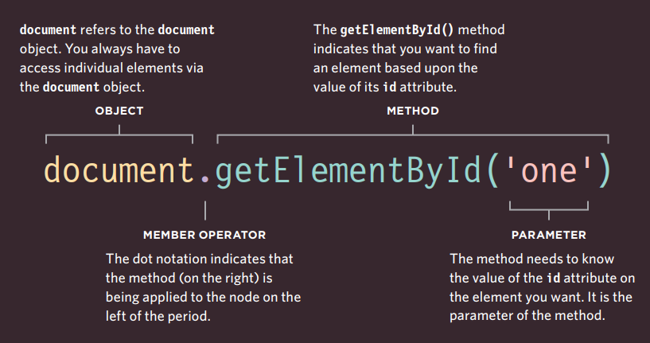
Este código devolverá el nodo elemento para el elemento cuyo atributo id tiene el valor one. A menudo verás nodos elemento almacenados en una variable para usarlos más adelante en el script (como viste en la pág. 190).
Aquí el método se usa en el objeto documento, por lo que busca ese elemento en cualquier lugar dentro de la página. Los métodos DOM también se pueden usar en nodos elemento dentro de la página para encontrar descendientes de ese nodo.
SELECCIONAR ELEMENTOS USANDO ATRIBUTOS ID¶
getElementById() te permite seleccionar un solo nodo elemento especificando el valor de su atributo id.
Este método tiene un parámetro: el valor del atributo id del elemento que deseas seleccionar. Este valor se coloca entre comillas porque es una cadena. Las comillas pueden ser simples o dobles, pero deben coincidir.
En el ejemplo de la izquierda, la primera línea de código JavaScript encuentra el elemento cuyo atributo id tiene el valor one, y almacena una referencia a ese nodo en una variable llamada el.
El código luego usa una propiedad llamada className (que conocerás en la pág. 232) para actualizar el valor del atributo class del elemento almacenado en esta variable. Su valor es cool, y esto activa una nueva regla en el CSS que establece el color de fondo del elemento a aguamarina.
Observa cómo la propiedad className se usa en la variable que almacena la referencia al elemento.
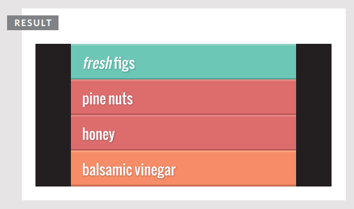
Esta ventana de resultados muestra el ejemplo después de que el script ha actualizado el primer elemento de la lista. El estado original, antes de que el script se ejecutara, se muestra en la pág. 185.
NODELISTS: CONSULTAS DOM QUE DEVUELVEN MÁS DE UN ELEMENTO¶
Cuando un método DOM puede devolver más de un elemento, devuelve una NodeList (incluso si solo encuentra un elemento coincidente).
Una NodeList es una colección de nodos elemento. Cada nodo recibe un número de índice (un número que comienza en cero, como un arreglo).
El orden en que los nodos elemento se almacenan en una NodeList es el mismo orden en que aparecieron en la página HTML.
Cuando una consulta DOM devuelve una NodeList, es posible que desees:
- Seleccionar un elemento de la NodeList.
- Recorrer cada elemento de la NodeList y ejecutar las mismas sentencias en cada uno de los nodos elemento.
Las NodeLists se parecen a los arreglos y se numeran como los arreglos, pero en realidad no son arreglos; son un tipo de objeto llamado colección.
Como cualquier otro objeto, una NodeList tiene propiedades y métodos, notablemente:
- La propiedad
lengthte indica cuántos elementos hay en la NodeList. - El método
item()devuelve un nodo específico de la NodeList cuando le indicas el número de índice del elemento que deseas (entre paréntesis). Sin embargo, es más común usar la sintaxis de arreglos (con corchetes) para recuperar un elemento de una NodeList (como verás en la pág. 199).
NODELISTS VIVOS Y ESTÁTICOS¶
Hay ocasiones en las que querrás trabajar con la misma selección de elementos varias veces, por lo que la NodeList se puede almacenar en una variable y reutilizarse (en lugar de recolectar los mismos elementos nuevamente).
En una NodeList viva, cuando tu script actualiza la página, la NodeList se actualiza al mismo tiempo. Los métodos que comienzan con getElementsBy... devuelven NodeLists vivas. También suelen ser más rápidas de generar que las NodeLists estáticas.
En una NodeList estática, cuando tu script actualiza la página, la NodeList no se actualiza para reflejar los cambios realizados por el script.
Los nuevos métodos que comienzan con querySelector... (que usan sintaxis de selector CSS) devuelven NodeLists estáticas. Reflejan el documento en el momento en que se hizo la consulta. Si el script cambia el contenido de la página, la NodeList no se actualiza para reflejar esos cambios.
Aquí puedes ver cuatro consultas DOM diferentes que todas devuelven una NodeList. Para cada consulta, puedes ver los elementos y sus números de índice en la NodeList que se devuelve.
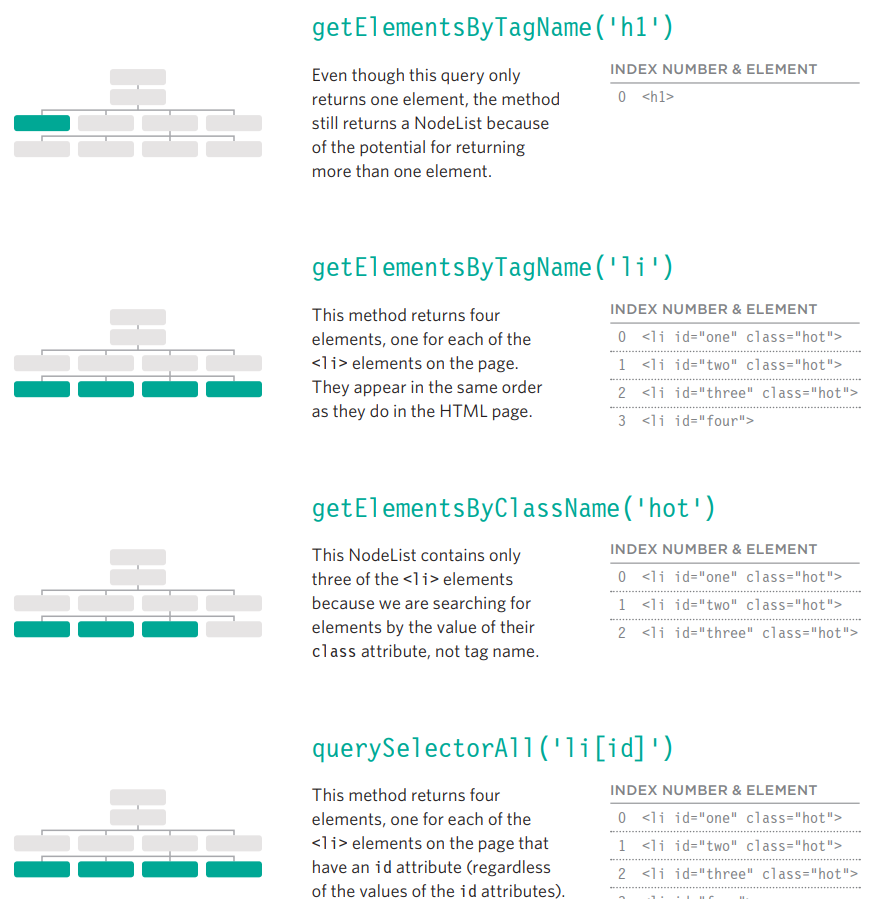
getElementsByTagName('h1')
Aunque esta consulta solo devuelve un elemento, el método aún devuelve una NodeList debido a la posibilidad de devolver más de un elemento.
getElementsByTagName('li')
Este método devuelve cuatro elementos, uno por cada elemento <li> en la página. Aparecen en el mismo orden que en la página HTML.
getElementsByClassName('hot')
Esta NodeList contiene solo tres de los elementos <li> porque estamos buscando elementos por el valor de su atributo class, no por el nombre de etiqueta.
querySelectorAll('li[id]')
Este método devuelve cuatro elementos, uno por cada elemento <li> en la página que tiene un atributo id (independientemente de los valores de los atributos id).
SELECCIONAR UN ELEMENTO DE UNA NODELIST¶
Hay dos formas de seleccionar un elemento de una NodeList: el método item() y la sintaxis de arreglos. Ambos requieren el número de índice del elemento que deseas.
EL MÉTODO item()¶
Las NodeLists tienen un método llamado item() que devolverá un nodo individual de la NodeList. Especificas el número de índice del elemento que deseas como parámetro del método (dentro del paréntesis).
Ejecutar código cuando no hay elementos con los que trabajar desperdicia recursos. Por lo tanto, los programadores a menudo verifican que haya al menos un elemento en la NodeList antes de ejecutar cualquier código. Para hacer esto, usa la propiedad length de la NodeList: te indica cuántos elementos contiene la NodeList.
Aquí puedes ver que se usa una sentencia if. La condición para la sentencia if es si la propiedad length de la NodeList es mayor que cero. Si es así, entonces las sentencias dentro del if se ejecutan. Si no, el código continúa ejecutándose después de la segunda llave.
-
Selecciona los elementos que tienen un atributo
classcuyo valor eshoty almacena la NodeList en una variable llamadaelements. -
Usa la propiedad
lengthpara verificar cuántos elementos se encontraron. Si se encontraron 1 o más, ejecuta el código dentro de la sentenciaif. -
Almacena el primer elemento de la NodeList en una variable llamada
firstItem. (Dice 0 porque los números de índice comienzan en cero).
La sintaxis de arreglos se prefiere sobre el método item() porque es más rápida. Antes de seleccionar un nodo de una NodeList, verifica que contenga nodos. Si usas la NodeList repetidamente, guárdala en una variable.
SINTAXIS DE ARREGLOS¶
Puedes acceder a nodos individuales usando una sintaxis de corchetes similar a la que se usa para acceder a elementos individuales de un arreglo. Especificas el número de índice del elemento que deseas dentro de corchetes que siguen a la NodeList.
Como con todas las consultas DOM, si necesitas acceder a la misma NodeList varias veces, almacena el resultado de la consulta DOM en una variable. En los ejemplos de ambas páginas, la NodeList se almacena en una variable llamada elements.
Si creas una variable para contener una NodeList pero no hay elementos coincidentes, la variable será una NodeList vacía. Cuando verificas la propiedad length de la variable, devolverá el número 0 porque no contiene ningún elemento.
-
Crea una NodeList que contenga elementos que tienen un atributo
classcuyo valor eshot, y guárdala en la variableelements. -
Si ese número es mayor o igual a uno, ejecuta el código dentro de la sentencia
if. -
Obtén el primer elemento de la NodeList (dice 0 porque los números de índice comienzan en cero).
SELECCIONAR ELEMENTOS USANDO ATRIBUTOS CLASS¶
El método getElementsByClassName() te permite seleccionar elementos cuyo atributo class contiene un valor específico.
El método tiene un parámetro: el nombre de la clase que se indica entre comillas dentro del paréntesis después del nombre del método.
Debido a que varios elementos pueden tener el mismo valor para su atributo class, este método siempre devuelve una NodeList.
Este ejemplo comienza buscando elementos cuyo atributo class contiene hot. (El valor de un atributo class puede contener varios nombres de clase, cada uno separado por un espacio). El resultado de esta consulta DOM se almacena en una variable llamada elements porque se usa más de una vez en el ejemplo.
Una sentencia if verifica si la consulta encontró más de dos elementos. Si es así, el tercero se selecciona y se almacena en una variable llamada el. El atributo class de ese elemento se actualiza luego a cool. (A su vez, esto activa un nuevo estilo CSS, cambiando la presentación de ese elemento).
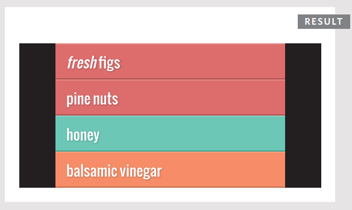
SELECCIONAR ELEMENTOS POR NOMBRE DE ETIQUETA¶
El método getElementsByTagName() te permite seleccionar elementos usando su nombre de etiqueta.
El nombre del elemento se especifica como parámetro, por lo que se coloca dentro del paréntesis y está contenido entre comillas.
Ten en cuenta que no incluyes los corchetes angulares que rodean el nombre de la etiqueta en el HTML (solo las letras dentro de los corchetes).
Este ejemplo busca cualquier elemento <li> en el documento. Almacena el resultado en una variable llamada elements porque el resultado se usa más de una vez en este ejemplo.
Una sentencia if verifica si se encontró algún elemento <li>. Como con cualquier elemento que puede devolver una NodeList, verificas que haya un elemento adecuado antes de intentar trabajar con él.
Si se encontraron elementos coincidentes, se selecciona el primero y se actualiza su atributo class. Esto cambia el color del elemento de la lista a aguamarina.
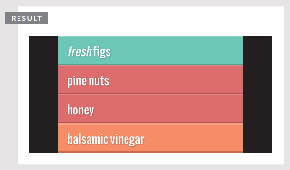
SELECCIONAR ELEMENTOS USANDO SELECTORES CSS¶
querySelector() devuelve el primer nodo elemento que coincide con el selector de estilo CSS. querySelectorAll() devuelve una NodeList de todas las coincidencias.
Ambos métodos toman un selector CSS como su único parámetro. La sintaxis de selectores CSS ofrece más flexibilidad y precisión al seleccionar un elemento que solo especificar un nombre de clase o un nombre de etiqueta, y también debería ser familiar para los desarrolladores web front-end que están acostumbrados a apuntar a elementos usando CSS.
Estos dos métodos fueron introducidos por los fabricantes de navegadores porque muchos desarrolladores estaban incluyendo scripts como jQuery en sus páginas para poder seleccionar elementos usando selectores CSS. (Conocerás jQuery en el Capítulo 7).
Si observas la última línea de código, se usa sintaxis de arreglos para seleccionar el segundo elemento de la NodeList, aunque esa NodeList está almacenada en una variable.
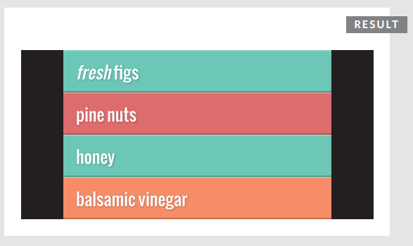
El código JavaScript se ejecuta línea por línea, y las sentencias afectan el contenido de una página a medida que el intérprete las procesa.
Si una consulta DOM se ejecuta cuando se carga una página, la misma consulta podría devolver diferentes elementos si se usa nuevamente más adelante en la página.
A continuación puedes ver cómo el ejemplo de la página izquierda (query-selector.js) cambia el árbol DOM a medida que se ejecuta.
1: CUANDO LA PÁGINA CARGA POR PRIMERA VEZ
Así es como comienza la página. Hay tres elementos <li> que tienen un atributo class cuyo valor es hot. El método querySelector() encuentra el primero y actualiza el valor de su atributo class de hot a cool. Esto también actualiza el árbol DOM almacenado en memoria, por lo que —después de que esta línea se haya ejecutado— solo el segundo y tercer elemento <li> tienen un atributo class con un valor de hot.
2: DESPUÉS DEL PRIMER CONJUNTO DE SENTENCIAS
Cuando se ejecuta el segundo selector, ahora solo hay dos elementos <li> cuyos atributos class tienen un valor de hot (ver izquierda), por lo que solo selecciona estos dos. Esta vez, se usa sintaxis de arreglos para trabajar con el segundo de los elementos coincidentes (que es el tercer elemento de la lista). Nuevamente, el valor de su atributo class se cambia de hot a cool.
3: DESPUÉS DEL SEGUNDO CONJUNTO DE SENTENCIAS
Cuando el segundo selector ha hecho su trabajo, el árbol DOM ahora solo contiene un elemento <li> cuyo atributo class tiene un valor de hot. Cualquier código adicional que busque elementos <li> cuyo atributo class tenga un valor de hot encontraría solo este. Sin embargo, si estuvieran buscando elementos <li> cuyo atributo class tiene un valor de cool, encontrarían dos nodos elemento coincidentes.
REPETIR ACCIONES PARA TODA UNA NODELIST¶
Cuando tienes una NodeList, puedes recorrer cada nodo en la colección y aplicar las mismas sentencias a cada uno.
En este ejemplo, una vez que se ha creado una NodeList, se usa un bucle for para recorrer cada elemento de la NodeList.
Todas las sentencias dentro de las llaves del bucle for se aplican a cada elemento de la NodeList uno por uno.
Para indicar con qué elemento de la NodeList se está trabajando actualmente, se usa el contador i en la sintaxis de estilo de arreglo.
-
La variable
hotItemscontiene una NodeList. Contiene todos los elementos de la lista cuyo atributoclasstiene un valor dehot. Se recogen usando el métodoquerySelectorAll(). -
La propiedad
lengthde la NodeList indica cuántos elementos hay en la NodeList. El número de elementos determina cuántas veces debe ejecutarse el bucle. -
La sintaxis de arreglo se usa para indicar con qué elemento de la NodeList se está trabajando actualmente:
hotItems[i]. Usa la variable del contador dentro de los corchetes.
RECORRIENDO UNA NODELIST¶
Si quieres aplicar el mismo código a numerosos elementos, recorrer una NodeList es una técnica poderosa. Implica averiguar cuántos elementos hay en la NodeList y luego establecer un contador para recorrerlos uno por uno.
Cada vez que el bucle se ejecuta, el script verifica que el contador sea menor que el número total de elementos en la NodeList.
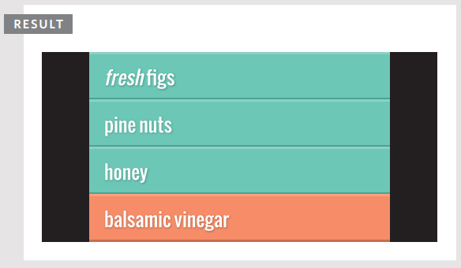
En este ejemplo, la NodeList se genera usando querySelectorAll(), y busca cualquier elemento <li> que tenga un atributo class cuyo valor sea hot. La NodeList se almacena en una variable llamada hotItems, y el número de elementos en la lista se obtiene usando la propiedad length. Para cada uno de los elementos en la NodeList, el valor del atributo class se cambia a cool.
RECORRIENDO UNA NODELIST: PASO A PASO¶
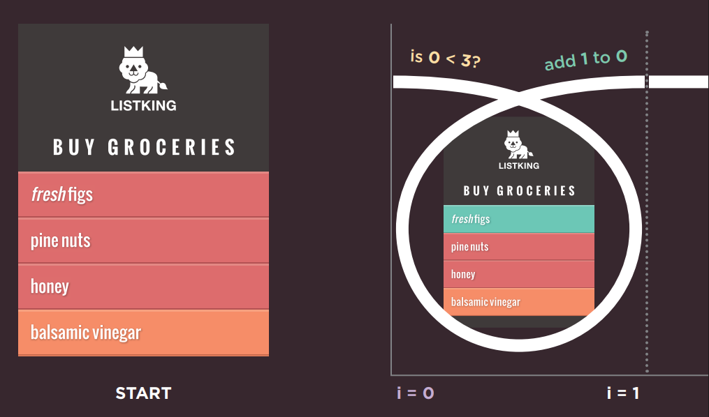
Al comienzo de este ejemplo, hay tres elementos de lista con un atributo class cuyo valor es hot, por lo que el valor de hotItems.length es 3.
Al principio, el valor del contador se establece en 0, por lo que el primer elemento de la NodeList (que tiene un índice de 0) es seleccionado y el valor de su atributo class se establece en cool.
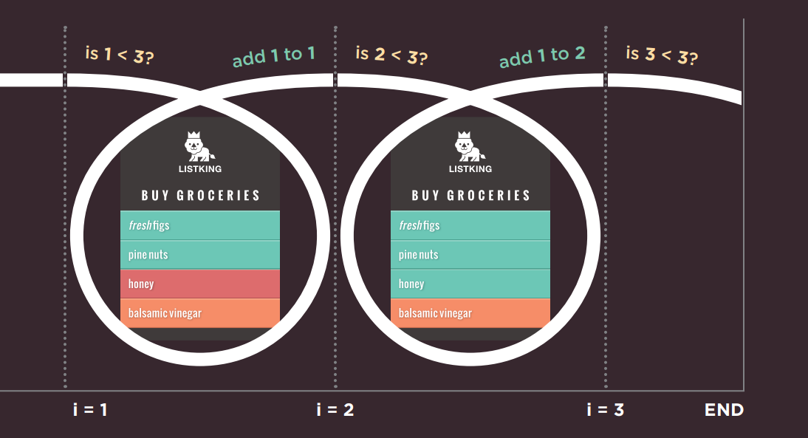
Cuando el valor del contador es 1, el segundo elemento de la NodeList (que tiene un índice de 1) es seleccionado y el valor de su atributo class se establece en cool.
Cuando el valor del contador es 2, el tercer elemento de la NodeList (que tiene un índice de 2) es seleccionado y el valor de su atributo class se establece en cool.
Cuando el valor del contador es 3, la condición ya no devuelve true, por lo que el bucle termina. El script continúa entonces con la primera línea de código después del bucle.
RECORRIENDO EL DOM¶
Cuando tienes un nodo elemento, puedes seleccionar otro elemento en relación con él usando estas cinco propiedades. Esto se conoce como recorrer el DOM.
parentNode¶
Esta propiedad encuentra el nodo elemento del elemento contenedor (o padre) en el HTML.
(1) Si comenzaras con el primer elemento <li>, entonces su nodo padre sería el que representa al elemento <ul>.
previousSibling / nextSibling¶
Estas propiedades encuentran el hermano anterior o siguiente de un nodo, si hay hermanos.
Si comenzaras con el primer elemento <li>, no tendría un hermano anterior. Sin embargo, su siguiente hermano (2) sería el nodo que representa al segundo <li>.
firstChild / lastChild¶
Estas propiedades encuentran el primer o último hijo del elemento actual.
Si comenzaras con el elemento <ul>, el primer hijo sería el nodo que representa al primer elemento <li>, y (3) el último hijo sería el último <li>.
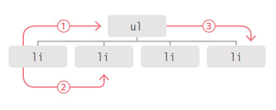
Estas son propiedades del nodo actual (no métodos para seleccionar un elemento); por lo tanto, no terminan en paréntesis.
Si usas estas propiedades y no tienen un hermano anterior/siguiente, o un primer/último hijo, el resultado será null.
Estas propiedades son de solo lectura; solo se pueden usar para seleccionar un nuevo nodo, no para actualizar un padre, hermano o hijo.
NODOS DE ESPACIO EN BLANCO¶
Recorrer el DOM puede ser difícil porque algunos navegadores añaden un nodo de texto cada vez que encuentran espacio en blanco entre elementos.
La mayoría de los navegadores, excepto IE, tratan el espacio en blanco entre elementos (como espacios o retornos de carro) como un nodo de texto, por lo que las siguientes propiedades devuelven diferentes elementos en diferentes navegadores:
previousSiblingnextSiblingfirstChildlastChild
A continuación, puedes ver todos los nodos de espacio en blanco añadidos al árbol DOM para el ejemplo de la lista. Cada uno está representado por un cuadrado verde. Podrías eliminar todo el espacio en blanco de una página antes de servirla al navegador. Esto también haría la página más pequeña y más rápida de servir/cargar. Sin embargo, también haría el código mucho más difícil de leer.
Otra forma de evitar este problema es no usar estas propiedades DOM en absoluto. Una de las formas más populares de abordar este tipo de problema es usar una biblioteca de JavaScript como jQuery, que ayuda a resolver estos inconvenientes. Este tipo de inconsistencias entre navegadores fueron un factor importante en la popularidad de jQuery.
Internet Explorer (mostrado arriba) ignora el espacio en blanco y no crea nodos de texto adicionales.
Chrome, Firefox, Safari y Opera crean nodos de texto a partir del espacio en blanco (espacios y retornos de carro).
HERMANO ANTERIOR Y SIGUIENTE¶
Has visto que estas propiedades pueden devolver resultados inconsistentes en diferentes navegadores. Sin embargo, es seguro usarlas cuando no hay espacio en blanco entre elementos.
Para este ejemplo, se han eliminado todos los espacios entre los elementos HTML. Para demostrar estas propiedades, el segundo elemento de la lista se selecciona usando getElementById().
Desde este nodo elemento, la propiedad previousSibling devolverá el primer elemento <li>, y la propiedad nextSibling devolverá el tercer elemento <li>.
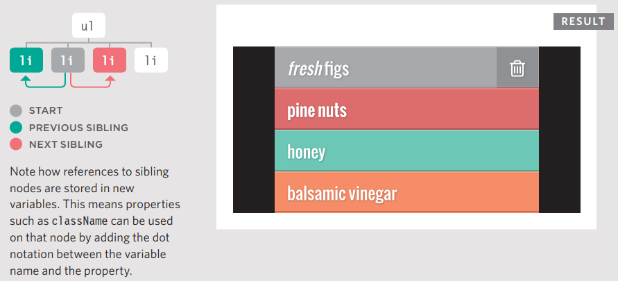
Observa cómo las referencias a los nodos hermanos se almacenan en nuevas variables. Esto significa que propiedades como className se pueden usar en ese nodo añadiendo la notación de punto entre el nombre de la variable y la propiedad.
PRIMER Y ÚLTIMO HIJO¶
Estas propiedades también devuelven resultados inconsistentes si hay espacio en blanco entre elementos. En este ejemplo, se usa una solución ligeramente diferente en el HTML – las etiquetas de cierre se ponen junto a las etiquetas de apertura del siguiente elemento, haciéndolo un poco más legible. El ejemplo comienza usando el método getElementsByTagName() para seleccionar el elemento <ul> de la página. Desde este nodo elemento, la propiedad firstChild devolverá el primer elemento <li>, y la propiedad lastChild devolverá el último elemento <li>.
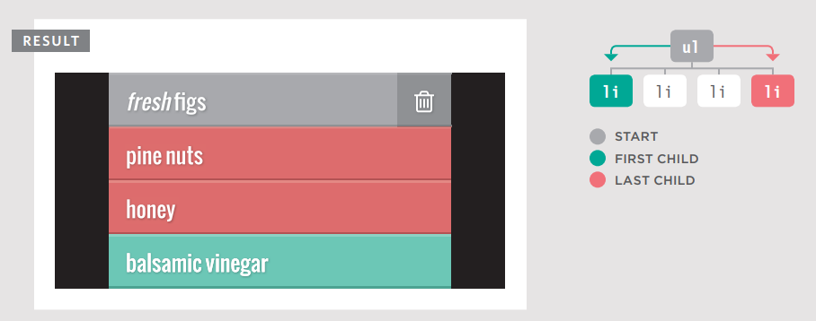
CÓMO OBTENER/ACTUALIZAR EL CONTENIDO DE UN ELEMENTO¶
Hasta ahora este capítulo se ha centrado en encontrar elementos en el árbol DOM. El resto de este capítulo muestra cómo acceder/actualizar el contenido de un elemento. Tu elección de técnicas depende de lo que contenga el elemento.
Observa los tres ejemplos de elementos <li> que se muestran a la derecha: <li id="one">figs</li> Cada uno añade algo más de marcado y, como resultado, el fragmento del árbol DOM para cada elemento de la lista es muy diferente.
- El primero (en esta página) solo contiene texto.
- El segundo y el tercero (en la página derecha) contienen una mezcla de texto y un elemento
<em>.
Puedes ver que añadiendo algo tan simple como un elemento <em>, la estructura del árbol DOM cambia significativamente. A su vez, esto afecta cómo podrías trabajar con ese elemento de la lista. Cuando un elemento contiene una mezcla de texto y otros elementos, es más probable que trabajes con el elemento contenedor en lugar de con los nodos individuales de cada descendiente.
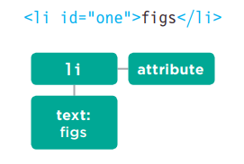
Arriba, el elemento <li> tiene:
- Un nodo hijo que contiene la palabra que puedes ver en el elemento de la lista:
figs - Un nodo atributo que contiene el atributo
id
Para trabajar con el contenido de los elementos puedes:
- Navegar a los nodos de texto. Esto funciona mejor cuando el elemento solo contiene texto, sin otros elementos.
- Trabajar con el elemento contenedor. Esto te permite acceder a sus nodos de texto y elementos hijo. Funciona mejor cuando un elemento tiene nodos de texto y elementos hijo que son hermanos.
NODOS DE TEXTO¶
Una vez que has navegado de un elemento a su nodo de texto, hay una propiedad que usarás comúnmente:
| PROPIEDAD | DESCRIPCIÓN |
|---|---|
nodeValue |
Accede al texto desde el nodo |
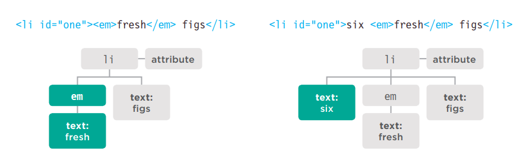
Se añade un elemento <em>. Se convierte en el primer hijo.
- El nodo elemento
<em>tiene su propio nodo hijo de texto que contiene la palabrafresh. - El nodo de texto original ahora es hermano del nodo que representa al elemento
<em>.
Cuando se añade texto antes del elemento <em>:
- El primer hijo del elemento
<li>es un nodo de texto, que contiene la palabrasix. - Tiene un hermano que es un nodo elemento para el elemento
<em>. A su vez, ese nodo elemento<em>tiene un nodo hijo de texto que contiene la palabrafresh. - Finalmente, hay un nodo de texto que contiene la palabra
figs, que es hermano tanto del nodo de texto de la palabrasixcomo del nodo elemento<em>.
ELEMENTO CONTENEDOR¶
Cuando trabajas con un nodo elemento (en lugar de su nodo de texto), ese elemento puede contener marcado. Tienes que elegir si deseas recuperar (obtener) o actualizar (establecer) el marcado además del texto.
| PROPIEDAD | DESCRIPCIÓN |
|---|---|
innerHTML |
Obtiene/establece texto y marcado |
textContent |
Obtiene/establece solo texto |
innerText |
Obtiene/establece solo texto |
Cuando usas estas propiedades para actualizar el contenido de un elemento, el nuevo contenido sobrescribirá todo el contenido del elemento (tanto texto como marcado).
Por ejemplo, si usaras cualquiera de estas propiedades para actualizar el contenido del elemento <body>, se actualizaría toda la página web.
ACCEDER Y ACTUALIZAR UN NODO DE TEXTO CON nodeValue¶
Cuando seleccionas un nodo de texto, puedes recuperar o modificar su contenido usando la propiedad nodeValue.
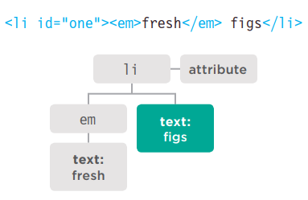
El código siguiente muestra cómo acceder al segundo nodo de texto. Devolverá el resultado: figs
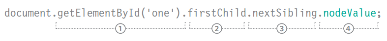
Para usar nodeValue, debes estar en un nodo de texto, no en el elemento que contiene el texto. Este ejemplo muestra que navegar desde el nodo elemento hasta un nodo de texto puede ser complicado.
Si no sabes si habrá nodos elemento junto a nodos de texto, es más fácil trabajar con el elemento contenedor.
- El nodo elemento
<li>se selecciona usando el métodogetElementById(). - El primer hijo de
<li>es el elemento<em>. - El nodo de texto es el siguiente hermano de ese elemento
<em>. - Tienes el nodo de texto y puedes acceder a su contenido usando
nodeValue.
ACCEDIENDO Y CAMBIANDO UN NODO DE TEXTO¶
Para trabajar con texto en un elemento, primero se accede al nodo elemento y luego a su nodo de texto.
El nodo de texto tiene una propiedad llamada nodeValue que devuelve el texto en ese nodo de texto.
También puedes usar la propiedad nodeValue para actualizar el contenido de un nodo de texto.
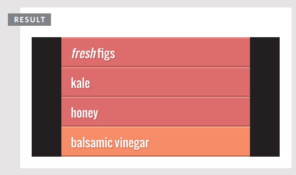
Este ejemplo toma el contenido de texto del segundo elemento de la lista y lo cambia de pine nuts a kale.
La primera línea obtiene el segundo elemento de la lista. Se almacena en una variable llamada itemTwo.
Luego, el contenido de texto de ese elemento se almacena en una variable llamada elText.
La tercera línea de texto reemplaza las palabras pine nuts por kale usando el método replace() del objeto String.
La última línea usa la propiedad nodeValue para actualizar el contenido del nodo de texto con el valor actualizado.
ACCEDER Y ACTUALIZAR TEXTO CON textContent (& innerText)¶
La propiedad textContent te permite obtener o actualizar solo el texto que está en el elemento contenedor (y sus hijos).
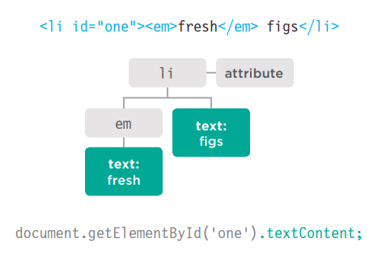
textContent¶
Para recoger el texto de los elementos <li> en nuestro ejemplo (e ignorar cualquier marcado dentro del elemento), puedes usar la propiedad textContent en el elemento <li> contenedor. En este caso devolvería el valor: fresh figs.
También puedes usar esta propiedad para actualizar el contenido del elemento; reemplaza todo el contenido del mismo (incluyendo cualquier marcado).
Un problema con la propiedad textContent es que Internet Explorer no la soportó hasta IE9. (Todos los demás navegadores principales la soportan.)
innerText¶
También puedes encontrarte con una propiedad llamada innerText, pero generalmente deberías evitarla por tres razones clave:
OBEDECE A CSS
No mostrará ningún contenido que haya sido ocultado por CSS. Por ejemplo, si hubiera una regla CSS que ocultara los elementos <em>, la propiedad innerText devolvería solo la palabra figs.
SOPORTE
Aunque la mayoría de los fabricantes de navegadores adoptaron la propiedad, Firefox no lo hizo porque innerText no es parte de ningún estándar.
RENDIMIENTO
Debido a que la propiedad innerText tiene en cuenta las reglas de diseño que especifican si el elemento es visible o no, puede ser más lenta para recuperar el contenido que la propiedad textContent.
ACCEDIENDO SOLO AL TEXTO¶
Para demostrar la diferencia entre textContent e innerText, este ejemplo incluye una regla CSS para ocultar el contenido del elemento <em>.
El script comienza obteniendo el contenido del primer elemento de la lista usando tanto la propiedad textContent como innerText. Luego escribe los valores después de la lista.
Finalmente, el valor del primer elemento de la lista se actualiza para decir sourdough bread. Esto se hace usando la propiedad textContent.
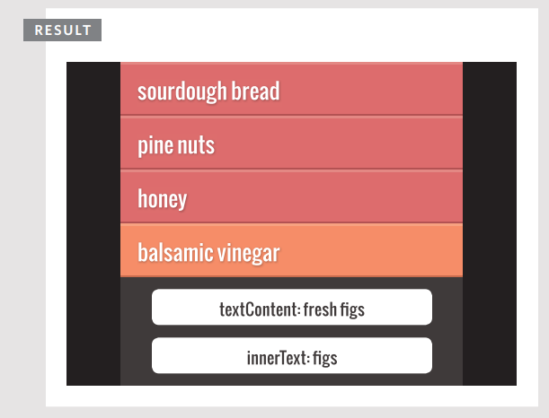
En la mayoría de los navegadores:
textContentrecoge las palabrasfresh figs.innerTextsolo muestrafigs(porquefreshestaba oculto por el CSS).
Pero:
- En IE8 o anterior, la propiedad
textContentno funciona. - En Firefox, la propiedad
innerTextdevolveráundefinedporque nunca fue implementada en Firefox.
AÑADIR O ELIMINAR CONTENIDO HTML¶
Hay dos enfoques muy diferentes para añadir y eliminar contenido de un árbol DOM: la propiedad innerHTML y la manipulación del DOM.
LA PROPIEDAD innerHTML¶
Note
hay riesgos de seguridad asociados con el uso de innerHTML – estos problemas se describen en la pág. 228."
ENFOQUE¶
innerHTML se puede usar en cualquier nodo elemento. Se usa tanto para recuperar como para reemplazar contenido.
Para actualizar un elemento, se proporciona nuevo contenido como una cadena. Puede contener marcado para elementos descendientes.
AÑADIR CONTENIDO¶
Para añadir nuevo contenido:
- Almacena el nuevo contenido (incluyendo marcado) como una cadena en una variable.
- Selecciona el elemento cuyo contenido deseas reemplazar.
- Establece la propiedad
innerHTMLdel elemento para que sea la nueva cadena.
ELIMINAR CONTENIDO¶
Para eliminar todo el contenido de un elemento, estableces innerHTML a una cadena vacía. Para eliminar un elemento de un fragmento DOM, por ejemplo, un <li> de un <ul>, necesitas proporcionar el fragmento completo menos ese elemento.
EJEMPLO: CAMBIAR UN ELEMENTO DE LA LISTA¶
1: Crea una variable que contenga el marcado
Puedes tener tanto o tan poco marcado en la variable como quieras. Es una forma rápida de añadir mucho marcado al árbol DOM.
2: Selecciona el elemento cuyo contenido deseas actualizar
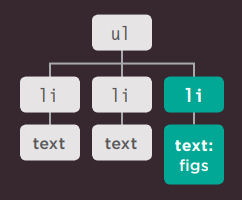
3: Actualiza el contenido del elemento seleccionado con el nuevo marcado
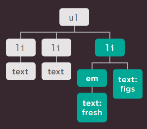
La manipulación del DOM apunta fácilmente a nodos individuales en el árbol DOM, mientras que innerHTML es más adecuado para actualizar fragmentos completos.
MANIPULACIÓN DEL DOM¶
La manipulación del DOM se refiere a un conjunto de métodos del DOM que te permiten crear nodos elemento y de texto, y luego adjuntarlos al árbol DOM o eliminarlos del árbol DOM.
La manipulación del DOM puede ser más segura que usar innerHTML, pero requiere más código y puede ser más lenta.
AÑADIR CONTENIDO¶
Para añadir contenido, usas un método DOM para crear nuevo contenido un nodo a la vez y almacenarlo en una variable. Luego se usa otro método DOM para adjuntarlo al lugar correcto en el árbol DOM.
ELIMINAR CONTENIDO¶
Puedes eliminar un elemento (junto con cualquier contenido y elementos hijo que pueda contener) del árbol DOM usando un solo método.
EJEMPLO: AÑADIR UN ELEMENTO DE LA LISTA¶
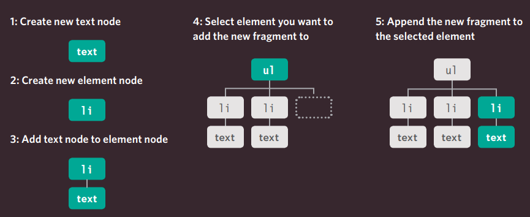
ACCEDER Y ACTUALIZAR TEXTO Y MARCADO CON innerHTML¶
Usando la propiedad innerHTML, puedes acceder y modificar el contenido de un elemento, incluyendo cualquier elemento hijo.
innerHTML¶
Al obtener HTML de un elemento, la propiedad innerHTML obtendrá el contenido de un elemento y lo devolverá como una larga cadena, incluyendo cualquier marcado que contenga el elemento.
Cuando se usa para establecer nuevo contenido para un elemento, tomará una cadena que puede contener marcado y procesará esa cadena, añadiendo cualquier elemento dentro de ella al árbol DOM.
Al añadir nuevo contenido usando innerHTML, ten en cuenta que una sola etiqueta de cierre faltante podría alterar el diseño de toda la página. Peor aún, si innerHTML se usa para añadir contenido creado por tus usuarios a una página, podrían añadir contenido malicioso. Ver pág. 228.
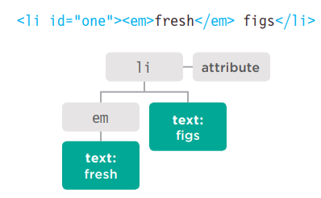
OBTENER CONTENIDO¶
La siguiente línea de código recoge el contenido del elemento de la lista y lo añade a una variable llamada elContent:
La variable elContent ahora contendría la cadena: '<em>fresh</em> figs'
ESTABLECER CONTENIDO¶
La siguiente línea de código añade el contenido de la variable elContent (incluyendo cualquier marcado) al primer elemento de la lista:
ACTUALIZAR TEXTO Y MARCADO¶
Este ejemplo comienza almacenando el primer elemento de la lista en una variable llamada firstItem.
Luego recupera el contenido de este elemento de la lista y lo almacena en una variable llamada itemContent.
Finalmente, el contenido del elemento de la lista se coloca dentro de un enlace. Observa cómo las comillas se escapan.
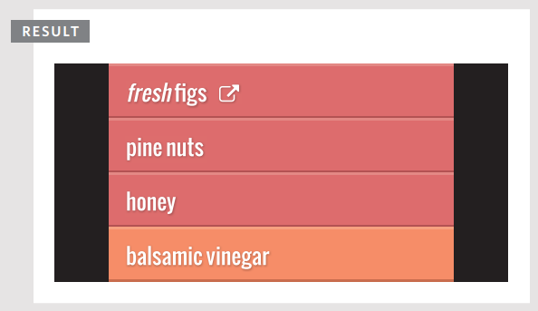
A medida que el contenido de la cadena se añade al elemento usando la propiedad innerHTML, el navegador añadirá cualquier elemento de la cadena al DOM. En este ejemplo, se ha añadido un elemento <a> a la página. (Cualquier elemento nuevo también estará disponible para otros scripts en la página.)
Si usas atributos en tu código HTML, escapar las comillas usando el carácter de barra invertida \ puede hacer más claro que esos caracteres no son parte del script.
AÑADIR ELEMENTOS USANDO MANIPULACIÓN DEL DOM¶
La manipulación del DOM ofrece otra técnica para añadir nuevo contenido a una página (en lugar de innerHTML). Implica tres pasos:
1. CREAR EL ELEMENTO: createElement()¶
Empiezas creando un nuevo nodo elemento usando el método createElement(). Este nodo elemento se almacena en una variable.
Cuando se crea el nodo elemento, aún no es parte del árbol DOM. No se añade al árbol DOM hasta el paso 3.
2. DARLE CONTENIDO: createTextNode()¶
createTextNode() crea un nuevo nodo de texto. De nuevo, el nodo se almacena en una variable. Se puede añadir al nodo elemento usando el método appendChild(). Esto proporciona el contenido para el elemento, aunque puedes omitir este paso si quieres adjuntar un elemento vacío al árbol DOM.
3. AÑADIRLO AL DOM: appendChild()¶
Ahora que tienes tu elemento (opcionalmente con algo de contenido en un nodo de texto), puedes añadirlo al árbol DOM usando el método appendChild().
El método appendChild() te permite especificar a qué elemento quieres añadir este nodo, como hijo del mismo.
En el ejemplo al final del capítulo, verás otro método que se puede usar para insertar un elemento en el árbol DOM. El método
insertBefore()se usa para añadir un nuevo elemento antes del nodo DOM seleccionado.Tanto la manipulación del DOM como
innerHTMLtienen sus usos. Verás una discusión sobre cuándo elegir cada método en la pág. 226.
Note
Puedes ver que los desarrolladores a veces dejan un elemento vacío en sus páginas HTML para adjuntar nuevo contenido a ese elemento, pero esta práctica es mejor evitarla a menos que sea absolutamente necesario.
AÑADIR UN ELEMENTO AL ÁRBOL DOM¶
createElement() crea un elemento que se puede añadir al árbol DOM, en este caso un elemento <li> vacío para la lista.
Este nuevo elemento se almacena dentro de una variable llamada newEl hasta que se adjunte al árbol DOM más adelante.
createTextNode() te permite crear un nuevo nodo de texto para adjuntar a un elemento. Se almacena en una variable llamada newText.
El nodo de texto se añade al nuevo nodo elemento usando appendChild().
El método getElementsByTagName() selecciona la posición en el árbol DOM para insertar el nuevo elemento (el primer elemento <ul> en la página).
Finalmente, appendChild() se usa de nuevo – esta vez para insertar el nuevo elemento y su contenido en el árbol DOM.
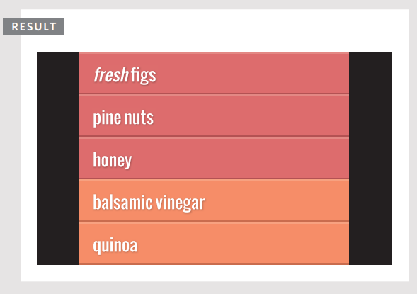
ELIMINAR ELEMENTOS MEDIANTE MANIPULACIÓN DEL DOM¶
La manipulación del DOM se puede usar para eliminar elementos del árbol DOM.
1. ALMACENAR EL ELEMENTO A ELIMINAR EN UNA VARIABLE¶
Empiezas seleccionando el elemento que va a ser eliminado y almacenas ese nodo elemento en una variable.
Puedes usar cualquiera de los métodos que viste en la sección sobre consultas DOM para seleccionar el elemento.
2. ALMACENAR EL PADRE DE ESE ELEMENTO EN UNA VARIABLE¶
A continuación, encuentras el elemento padre que contiene el elemento que deseas eliminar y almacenas ese nodo elemento en una variable.
La forma más sencilla de obtener este elemento es usar la propiedad parentNode de este elemento.
3. ELIMINAR EL ELEMENTO DE SU ELEMENTO CONTENEDOR¶
El método removeChild() se usa en el elemento contenedor que seleccionaste en el paso 2.
El método removeChild() toma un parámetro: la referencia al elemento que ya no deseas.
Cuando eliminas un elemento del DOM, también eliminará cualquier elemento hijo.
El ejemplo de la derecha es bastante simple, pero esta técnica puede alterar significativamente el árbol DOM.
Eliminar elementos del DOM afectará el número de índice de los hermanos en una NodeList.
ELIMINAR UN ELEMENTO DEL ÁRBOL DOM¶
Este ejemplo usa el método removeChild() para eliminar el cuarto elemento de la lista (junto con su contenido).
La primera variable, removeEl, almacena el elemento real que deseas eliminar de la página (el cuarto elemento de la lista).
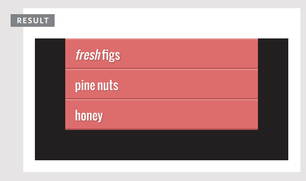
El método removeChild() se usa en la variable que contiene el nodo contenedor.
Requiere un parámetro: el elemento que deseas eliminar (que está almacenado en la segunda variable).
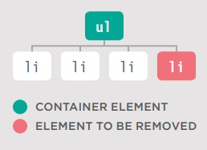
COMPARANDO TÉCNICAS: ACTUALIZAR CONTENIDO HTML¶
Hasta ahora, has visto tres técnicas para añadir HTML a una página web. Es momento de comparar cuándo deberías usar cada una.
En cualquier lenguaje de programación, a menudo hay varias formas de lograr la misma tarea. De hecho, si le pidieras a diez programadores que escribieran el mismo script, bien podrías encontrar diez enfoques diferentes.
Algunos programadores pueden tener opiniones bastante firmes y creer que su forma es siempre la forma "correcta" de hacer las cosas – cuando a menudo hay varias formas correctas. Si entiendes por qué las personas prefieren unos enfoques sobre otros, entonces estás en una buena posición para decidir si cumple con las necesidades de tu proyecto.
document.write()¶
El método write() del objeto document es una forma sencilla de añadir contenido que no estaba en el código fuente original a la página, pero su uso rara vez se recomienda.
VENTAJAS
- Es una forma rápida y fácil de mostrar a principiantes cómo se puede añadir contenido a una página.
DESVENTAJAS
- Solo funciona cuando la página se carga inicialmente.
- Si lo usas después de que la página se haya cargado, puede:
- Sobrescribir toda la página
- No añadir el contenido a la página
- Crear una nueva página
- Puede causar problemas con páginas XHTML que están estrictamente validadas.
- Este método es muy raramente usado por los programadores hoy en día y generalmente está mal visto.
Puedes elegir diferentes técnicas dependiendo de la tarea (y teniendo en cuenta cómo el sitio podría desarrollarse en el futuro).
element.innerHTML¶
La propiedad innerHTML te permite obtener/actualizar todo el contenido de cualquier elemento (incluyendo marcado) como una cadena.
VENTAJAS
- Puedes usarla para añadir mucho marcado nuevo usando menos código que los métodos de manipulación del DOM.
- Puede ser más rápida que la manipulación del DOM al añadir muchos elementos nuevos a una página web.
- Es una forma sencilla de eliminar todo el contenido de un elemento (asignándole una cadena vacía).
DESVENTAJAS
- No debería usarse para añadir contenido que provenga de un usuario (como un nombre de usuario o comentario de blog), ya que puede suponer un riesgo de seguridad significativo, que se discute en las siguientes cuatro páginas.
- Puede ser difícil aislar elementos individuales que deseas actualizar dentro de un fragmento DOM más grande.
- Los manejadores de eventos pueden dejar de funcionar como se esperaba.
MANIPULACIÓN DEL DOM¶
La manipulación del DOM se refiere al uso de un conjunto de métodos y propiedades para acceder, crear y actualizar elementos y nodos de texto.
VENTAJAS
- Es adecuada para cambiar un elemento de un fragmento DOM donde hay muchos hermanos.
- No afecta a los manejadores de eventos.
- Permite fácilmente que un script añada elementos de forma incremental (cuando no quieres alterar mucho código de una vez).
DESVENTAJAS
- Si tienes que hacer muchos cambios en el contenido de una página, es más lento que
innerHTML. - Necesitas escribir más código para lograr lo mismo en comparación con
innerHTML.
ATAQUES DE CROSS-SITE SCRIPTING (XSS)¶
Si añades HTML a una página usando innerHTML (o varios métodos de jQuery), debes estar al tanto de los Ataques de Cross-Site Scripting o XSS; de lo contrario, un atacante podría obtener acceso a las cuentas de tus usuarios.
Este libro tiene varias advertencias sobre problemas de seguridad cuando añades HTML a una página usando innerHTML. (También hay notas al respecto cuando se usa jQuery.)
CÓMO OCURRE EL XSS¶
XSS implica que un atacante coloque código malicioso en un sitio. Los sitios web a menudo presentan contenido creado por muchas personas diferentes. Por ejemplo:
- Los usuarios pueden crear perfiles o añadir comentarios.
- Varios autores pueden contribuir con artículos.
- Los datos pueden provenir de sitios de terceros como Facebook, Twitter, tickers de noticias y otros feeds.
- Se pueden subir archivos como imágenes y videos.
Los datos sobre los que no tienes control completo se conocen como datos no confiables; deben manejarse con cuidado.
Las siguientes cuatro páginas describen los problemas que debes tener en cuenta y cómo hacer que tu sitio sea seguro contra este tipo de ataques.
¿QUÉ PUEDEN HACER ESTOS ATAQUES?¶
XSS puede dar al atacante acceso a información en:
- El DOM (incluyendo datos de formularios)
- Las cookies de ese sitio web
- Tokens de sesión: información que te identifica de otros usuarios cuando inicias sesión en un sitio
Esto podría permitir al atacante acceder a una cuenta de usuario y:
- Hacer compras con esa cuenta
- Publicar contenido difamatorio
- Difundir su código malicioso más lejos / más rápido
INCLUSO EL CÓDIGO SIMPLE PUEDE CAUSAR PROBLEMAS¶
El código malicioso a menudo mezcla HTML y JavaScript (aunque las URL y CSS también pueden usarse para desencadenar ataques XSS).
Los dos ejemplos siguientes demuestran cómo un código bastante simple podría ayudar a un atacante a acceder a la cuenta de un usuario.
Este primer ejemplo almacena datos de cookies en una variable, que luego podría enviarse a un servidor de terceros:
Este código muestra cómo una imagen faltante puede usarse con un atributo HTML para desencadenar código malicioso:
Cualquier HTML de fuentes no confiables abre tu sitio a ataques XSS. Pero la amenaza solo proviene de ciertos caracteres.
DEFENDIÉNDOSE CONTRA EL CROSS-SITE SCRIPTING¶
VALIDAR LA ENTRADA QUE VA AL SERVIDOR¶
-
Solo permite que los visitantes ingresen el tipo de caracteres que necesitan cuando proporcionan información. Esto se conoce como validación. No permitas que usuarios no confiables envíen marcado HTML o JavaScript.
-
Vuelve a verificar la validación en el servidor antes de mostrar el contenido del usuario o almacenarlo en una base de datos. Esto es importante porque los usuarios podrían omitir la validación en el navegador desactivando JavaScript.
-
La base de datos puede contener de forma segura marcado y scripts de fuentes confiables (por ejemplo, tu sistema de gestión de contenidos). Esto se debe a que no intenta procesar el código; solo lo almacena.
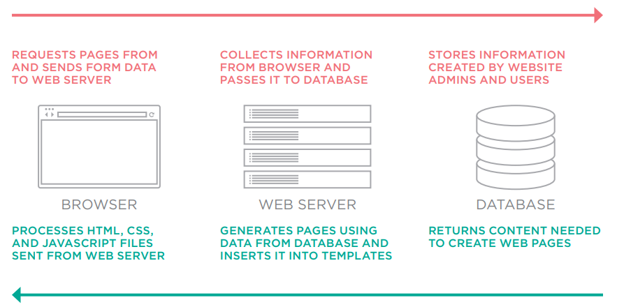
-
Cuando tus datos salgan de la base de datos, todos los caracteres potencialmente peligrosos deberían escaparse (ver pág. 231).
-
Asegúrate de que solo estás insertando contenido generado por usuarios en ciertas partes de los archivos de plantilla (ver pág. 230).
-
No crees fragmentos DOM que contengan HTML de fuentes no confiables. Solo debería añadirse como texto una vez que haya sido escapado.
Por lo tanto, puedes usar innerHTML de forma segura para añadir marcado a una página si has escrito el código – pero el contenido de cualquier fuente no confiable debería escaparse y añadirse como texto (no como marcado), usando propiedades como textContent.
XSS: VALIDACIÓN Y PLANTILLAS¶
Asegúrate de que tus usuarios solo puedan ingresar los caracteres que necesitan usar y limita dónde se mostrará este contenido en la página.
FILTRAR O VALIDAR LA ENTRADA¶
La defensa más básica es evitar que los usuarios ingresen caracteres en los campos de formulario que no necesitan usar al proporcionar ese tipo de información.
Por ejemplo, los nombres de usuarios y las direcciones de correo electrónico no contendrán corchetes angulares, ampersands o paréntesis, por lo que puedes validar los datos para evitar que se usen caracteres como estos.
Esto se puede hacer en el navegador, pero también debe hacerse en el servidor (en caso de que el usuario tenga JavaScript desactivado). Aprenderás sobre validación en el Capítulo 13.
LIMITAR DÓNDE VA EL CONTENIDO DEL USUARIO¶
Los usuarios malintencionados no solo usarán etiquetas <script> para intentar crear un ataque XSS. Como viste en la pág. 228, el código malicioso puede vivir en un atributo de manejador de eventos sin estar envuelto en etiquetas <script>. XSS también puede ser desencadenado por código malicioso en CSS o URL.
Los navegadores procesan HTML, CSS y JavaScript de diferentes maneras (o contextos de ejecución), y en cada lenguaje diferentes caracteres pueden causar problemas.
Por lo tanto, solo debes añadir contenido de fuentes no confiables como texto (no como marcado), y colocar ese texto en elementos que sean visibles en el viewport.
Puede que hayas visto que las secciones de comentarios en los sitios web rara vez permiten ingresar mucho marcado (a veces permiten un subconjunto limitado de HTML). Esto es para evitar que las personas ingresen código malicioso como etiquetas <script>, o cualquier otro carácter con un atributo de manejador de eventos.
Incluso los editores HTML utilizados en muchos sistemas de gestión de contenidos limitarán el código que se permite usar dentro de ellos, y automáticamente intentarán corregir cualquier marcado que parezca malicioso.
Nunca coloques ningún contenido de usuario en los siguientes lugares sin experiencia detallada en los problemas involucrados (que están más allá del alcance de este libro):
- Etiquetas
<script>:<script>aquí no</script> - Comentarios HTML:
<!-- aquí no --> - Nombres de etiquetas:
<noAquí href="/test" /> - Atributos:
<div noAquí="tampocoAquí" /> - Valores CSS:
{color: aquí no}
XSS: ESCAPAR Y CONTROLAR EL MARCADO¶
Cualquier contenido generado por usuarios que contenga caracteres que se usan en código debería escaparse en el servidor. Debes controlar cualquier marcado añadido a la página.
ESCAPAR EL CONTENIDO DEL USUARIO¶
Todos los datos de fuentes no confiables deberían escaparse en el servidor antes de mostrarse en la página.
La mayoría de los lenguajes del lado del servidor ofrecen funciones auxiliares que eliminarán o escaparán el código malicioso.
HTML
Escapa estos caracteres para que se muestren como caracteres (no se procesen como código):
| Carácter | Entidad |
|---|---|
& |
& |
< |
< |
> |
> |
" |
" |
' |
' (no ') |
/ |
/ |
` |
` |
JAVASCRIPT
Nunca incluyas datos de fuentes no confiables en JavaScript. Implica escapar todos los caracteres ASCII con un valor menor a 256 que no sean caracteres alfanuméricos (y puede ser un riesgo de seguridad).
URLS
Si tienes enlaces que contienen entrada del usuario (por ejemplo, enlaces a un perfil de usuario o consultas de búsqueda), usa el método encodeURIComponent() de JavaScript para codificar la entrada del usuario. Codifica los siguientes caracteres: , / ? : @ & = + $ #
AÑADIR CONTENIDO DEL USUARIO¶
Cuando añades contenido no confiable a una página HTML, una vez que ha sido escapado en el servidor, aún debería añadirse a la página como texto. JavaScript y jQuery ofrecen herramientas para hacer esto:
JAVASCRIPT
- SÍ usa:
textContentoinnerText(ver pág. 216) - NO uses:
innerHTML(ver pág. 220)
JQUERY
- SÍ usa:
.text()(ver pág. 316) - NO uses:
.html()(ver pág. 316)
Aún puedes usar la propiedad innerHTML y el método .html() de jQuery para añadir HTML al DOM, pero debes asegurarte de que:
- Tú controlas todo el marcado que se genera (no permitas contenido de usuario que pueda contener marcado).
- El contenido del usuario se escapa y se añade como texto usando los enfoques indicados anteriormente, en lugar de añadir el contenido del usuario como HTML.
NODOS ATRIBUTO¶
Una vez que tienes un nodo elemento, puedes usar otras propiedades y métodos en ese nodo elemento para acceder y cambiar sus atributos.
Hay dos pasos para acceder y actualizar atributos.
Primero, selecciona el nodo elemento que lleva el atributo y seguidamente coloca un símbolo de punto.
Luego, usa uno de los métodos o propiedades siguientes para trabajar con los atributos de ese elemento.
Encuentra el nodo elemento (funciona con cualquier técnica cubierta en este capítulo).
Obtiene el valor del atributo que se dio como parámetro del método.
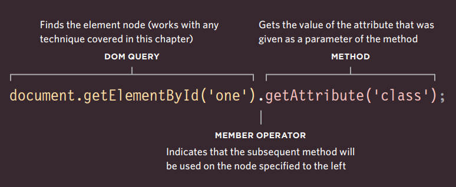
Indica que el método subsiguiente se usará en el nodo especificado a la izquierda.
Antes de trabajar con un atributo, es una buena práctica verificar si existe. Esto ahorrará recursos si el atributo no se encuentra.
MÉTODOS
| Método | Descripción |
|---|---|
getAttribute() |
Obtiene el valor del atributo |
hasAttribute() |
Comprueba si existe el atributo |
setAttribute() |
Establece el valor del atributo |
removeAttribute() |
Elimina el atributo |
PROPIEDADES
| Propiedad | Descripción |
|---|---|
className |
Obtiene o establece el valor del atributo class |
id |
Obtiene o establece el valor del atributo id |
Has visto que el DOM trata cada elemento HTML como su propio objeto en el árbol DOM. Las propiedades del objeto corresponden a los atributos que ese tipo de elemento puede llevar.
A la izquierda, puedes ver las propiedades className e id. (Otras incluyen accessKey, checked, href, lang y title).
VERIFICAR UN ATRIBUTO Y OBTENER SUS VALORES¶
Antes de trabajar con un atributo, es una buena práctica verificar si existe. Esto ahorrará recursos si el atributo no se encuentra.
El método hasAttribute() de cualquier nodo elemento te permite verificar si existe un atributo. El nombre del atributo se da como argumento entre paréntesis.
Usar hasAttribute() en una sentencia if como esta significa que el código dentro de las llaves se ejecutará solo si el atributo existe en el elemento dado.
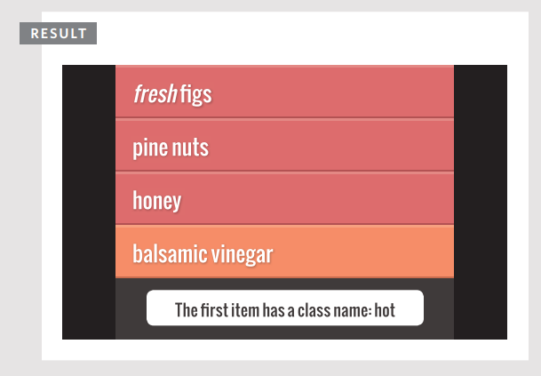
En este ejemplo, la consulta DOM getElementById() devuelve el elemento cuyo atributo id tiene un valor de one.
El método hasAttribute() se usa para verificar si este elemento tiene un atributo class, y devuelve un booleano. Esto se usa con una sentencia if para que el código dentro de las llaves se ejecute solo si el atributo class existe.
El método getAttribute() devuelve el valor del atributo class, que luego se escribe en la página.
Soporte del navegador: Ambos métodos tienen buen soporte en todos los navegadores principales.
CREAR ATRIBUTOS Y CAMBIAR SUS VALORES¶
La propiedad className te permite cambiar el valor del atributo class. Si el atributo no existe, se creará y se le dará el valor especificado.
Has visto esta propiedad usada a lo largo del capítulo para actualizar el estado de los elementos de la lista. A continuación, puedes ver otra forma de lograr la tarea.
El método setAttribute() te permite actualizar el valor de cualquier atributo. Toma dos parámetros: el nombre del atributo y el valor para el atributo.
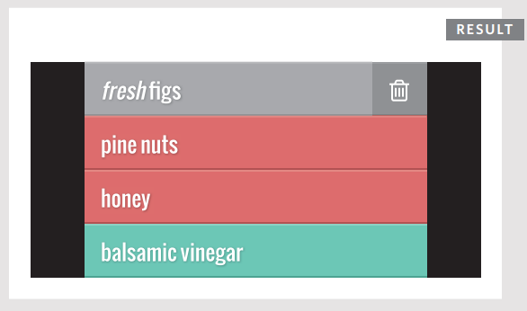
Cuando existe una propiedad (como las propiedades className o id), generalmente se considera mejor actualizar las propiedades en lugar de usar un método (porque, detrás de escena, el método solo estaría estableciendo las propiedades de todos modos).
Cuando actualizas el valor de un atributo (especialmente el atributo class), puede usarse para activar nuevas reglas CSS y, por lo tanto, cambiar la apariencia de los elementos.
Note
Estas técnicas sobrescriben todo el valor del atributo class. No añaden un nuevo valor al valor existente del atributo class.
Si quisieras añadir un nuevo valor al valor existente del atributo class, necesitarías leer primero el contenido del atributo, luego añadir el nuevo texto a ese valor existente del atributo (o usar el método .addClass() de jQuery cubierto en la pág. 320).
ELIMINAR ATRIBUTOS¶
Para eliminar un atributo de un elemento, primero selecciona el elemento, luego llama a removeAttribute().
Tiene un parámetro: el nombre del atributo a eliminar.
Intentar eliminar un atributo que no existe no causará un error, pero es una buena práctica verificar su existencia antes de intentar eliminarlo.
En este ejemplo, el método getElementById() se usa para recuperar el primer elemento de esta lista, que tiene un atributo id con un valor de one.
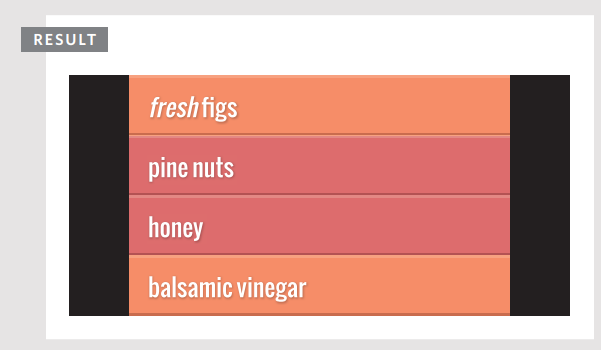
El script verifica si el elemento seleccionado tiene un atributo class y, si es así, se elimina.
EJEMPLO: MODELO DE OBJETOS DEL DOCUMENTO¶
Este ejemplo reúne una selección de las técnicas que has visto a lo largo del capítulo para actualizar el contenido de la lista.
Tiene tres objetivos principales:
1: Añadir un nuevo elemento al inicio y al final de la lista
Añadir un elemento al inicio de una lista requiere el uso de un método diferente que añadir un elemento al final de la lista.
2: Establecer un atributo class en todos los elementos
Esto implica recorrer cada uno de los elementos <li> y actualizar el valor del atributo class a cool.
3: Añadir el número de elementos de la lista al encabezado
Esto implica cuatro pasos:
- Leer el contenido del encabezado
- Contar el número de elementos
<li>en la página - Añadir el número de elementos al contenido del encabezado
- Actualizar el encabezado con este nuevo contenido
Esta parte del ejemplo añade dos nuevos elementos de lista al elemento <ul>: uno al final de la lista y otro al inicio. La técnica utilizada aquí es la manipulación del DOM y hay cuatro pasos para crear un nuevo nodo elemento y añadirlo al árbol DOM:
- Crear el nodo elemento
- Crear el nodo de texto
- Añadir el nodo de texto al nodo elemento
- Añadir el elemento al árbol DOM
Para lograr el paso cuatro, primero debes especificar el padre que contendrá el nuevo nodo. En ambos casos, este es el elemento <ul>. El nodo para este elemento se almacena en una variable llamada list porque se usa muchas veces.
El método appendChild() añade nuevos nodos como hijo del elemento padre. Tiene un parámetro: el nuevo contenido a añadir al árbol DOM. Si el elemento padre ya tiene elementos hijo, se añadirá después del último de ellos (y por lo tanto será el último hijo del elemento padre).
(Has visto este método usado varias veces tanto para añadir nuevos elementos al árbol como para añadir nodos de texto a nodos elemento.)
Para añadir el elemento al inicio de la lista, se usa el método insertBefore(). Esto requiere un dato adicional: el elemento antes del cual quieres añadir el nuevo contenido (el elemento destino).
El siguiente paso de este ejemplo es recorrer todos los elementos de la lista y actualizar el valor de sus atributos class, estableciéndolos a cool.
Esto se logra primero recogiendo todos los elementos de la lista y almacenándolos en una variable llamada listItems. Luego se usa un bucle for para recorrer cada uno de ellos. Para saber cuántas veces debe ejecutarse el bucle, se usa la propiedad length.
Finalmente, el código actualiza el encabezado para incluir el número de elementos de la lista. Lo actualiza usando la propiedad innerHTML en lugar de las técnicas de manipulación del DOM utilizadas anteriormente en el script.
Esto demuestra cómo puedes añadir al contenido de un elemento existente leyendo su valor actual y añadiéndole contenido. Podrías usar una técnica similar si necesitaras añadir un valor a un atributo – sin sobrescribir su valor existente.
Para actualizar el encabezado con el número de elementos de la lista, necesitas dos datos:
- El contenido original del encabezado para poder añadirle el número de elementos de la lista. Se recoge usando la propiedad
nodeValue(aunqueinnerHTMLotextContentharían lo mismo). - El número de elementos de la lista, que se puede encontrar usando la propiedad
lengthen la variablelistItems.
Con esta información lista, hay dos pasos para actualizar el contenido del elemento <h2>:
- Crear el nuevo encabezado y almacenarlo en una variable – el nuevo encabezado estará compuesto por el contenido original del encabezado, seguido del número de elementos de la lista.
- Actualizar el encabezado, lo que se hace actualizando el contenido del elemento de encabezado usando la propiedad
innerHTMLde ese nodo.
RESUMEN¶
- El navegador representa la página usando un árbol DOM.
- Los árboles DOM tienen cuatro tipos de nodos: nodos documento, nodos elemento, nodos atributo y nodos de texto.
- Puedes seleccionar nodos elemento por su atributo
idoclass, por nombre de etiqueta, o usando sintaxis de selectores CSS. - Siempre que una consulta DOM puede devolver más de un nodo, devolverá una NodeList.
- Desde un nodo elemento, puedes acceder y actualizar su contenido usando propiedades como
textContenteinnerHTML, o usando técnicas de manipulación del DOM. - Un nodo elemento puede contener múltiples nodos de texto y elementos hijo que son hermanos entre sí.
- En navegadores antiguos, la implementación del DOM es inconsistente (y es una razón popular para usar jQuery).
- Los navegadores ofrecen herramientas para ver el árbol DOM.